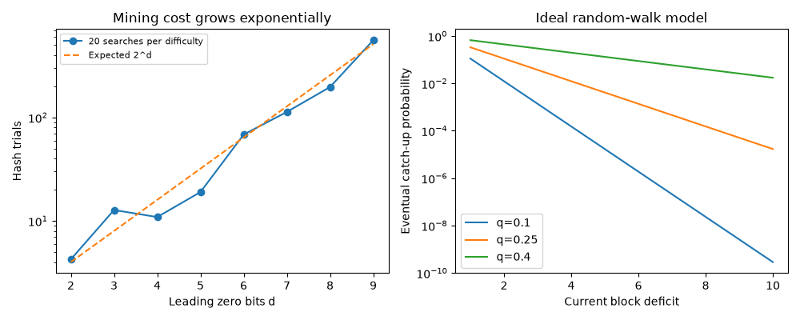

Note
Go to the end to download the full example code or to run this example in your browser via JupyterLite.
Hashcash: proof of work you can verify in one hash (Back 1997)#
With d leading zero bits, a uniform hash succeeds with probability 2**(-d). The expected search is 2**d trials, but any one run can finish much earlier or later. Nonce search changes a commitment without changing the payload.
What to look for#
Compare measured mining attempts with the average predicted by difficulty. Individual searches fluctuate: the average is not a deadline.
Read cells in order. An assert that produces no output has passed.
The final exercise asks you to change an input and explain the result.
The history behind this experiment: Breakthroughs in Consensus. See Exercises: consensus for a worked solution to the exercise.
import matplotlib.pyplot as plt
import numpy as np
import blockchainkit as bk
difficulties = list(range(2, 10))
samples = []
for difficulty in difficulties:
attempts = []
for trial in range(20):
block = bk.structures.Block(difficulty=difficulty, timestamp=trial)
result = bk.consensus.mine(block, max_attempts=100_000)
assert bk.consensus.valid_pow(result.block)
attempts.append(result.attempts)
samples.append(attempts)
print("Measured means:", [round(float(np.mean(row)), 1) for row in samples])
Measured means: [4.2, 12.8, 10.9, 19.0, 68.3, 113.1, 196.8, 558.5]
fig, axes = plt.subplots(1, 2, figsize=(10, 4))
means = np.mean(samples, axis=1)
axes[0].plot(difficulties, means, "o-", label="20 searches per difficulty")
axes[0].plot(
difficulties,
[bk.consensus.expected_trials(d) for d in difficulties],
"--",
label="Expected 2^d",
)
axes[0].set(
yscale="log",
xlabel="Leading zero bits d",
ylabel="Hash trials",
title="Mining cost grows exponentially",
)
axes[0].legend(fontsize=8)
for fraction in (0.1, 0.25, 0.4):
deficits = list(range(1, 11))
axes[1].plot(
deficits,
[bk.consensus.eventual_catch_up(fraction, z) for z in deficits],
label=f"q={fraction}",
)
axes[1].set(
yscale="log",
xlabel="Current block deficit",
ylabel="Eventual catch-up probability",
title="Ideal random-walk model",
)
axes[1].legend()
fig.tight_layout()

Exercise#
Repeat with more trials and compare means and medians. The right plot assumes independent block discoveries and an infinite horizon; it is not Nakamoto’s Poisson confirmation calculation and omits propagation effects.
Total running time of the script: (0 minutes 0.584 seconds)